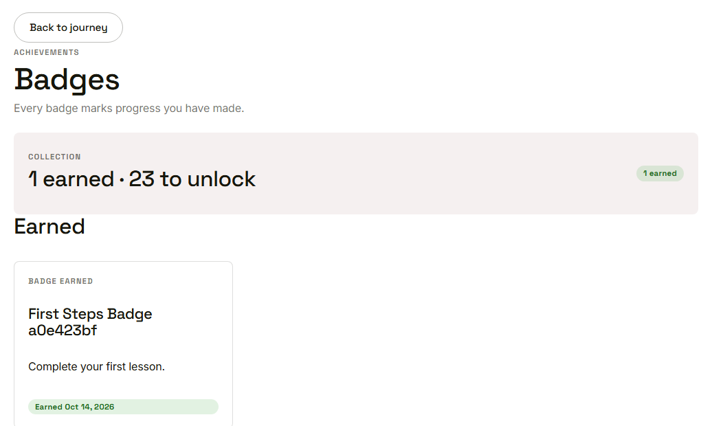
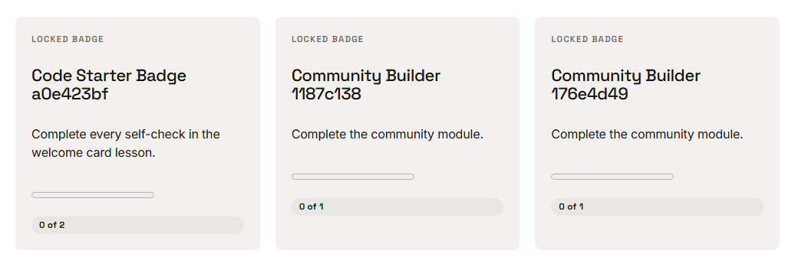
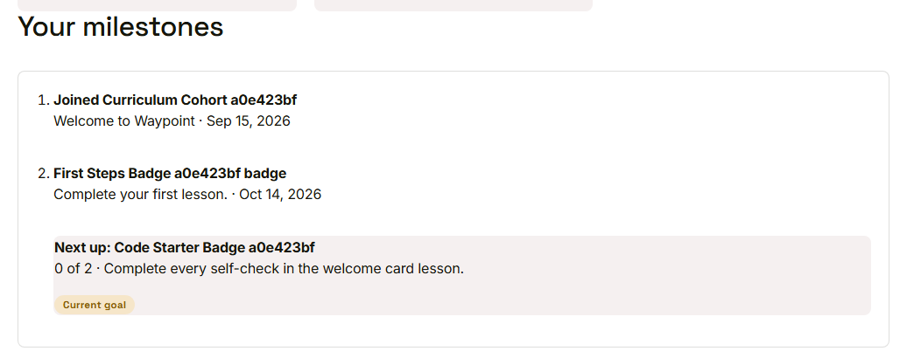

Waypoint · Video 041
Viewing badges
What is earned and what is next
Earned badges

An earned badge, what it is for, and when
Locked badges show the way

Criteria and counted progress
Your milestones

A timeline ending in the current goal
Things to remember
Earned badges show their purpose and date
Locked badges show criteria and counted progress
The timeline points to the current goal
Every count comes from one source